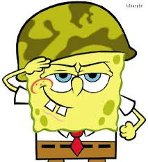

Major Bob Esponja Calça Quadrada
Classificado (mas ele ainda frita hambúrgueres como recruta)
Comando Fundo do Mar - Divisão Tática de Defesa de Fenda do Biquíni
Proteger o Siri Cascudo contra ameaças... incluindo Plankton e fome inesperada!
Após anos como cozinheiro de combate no Siri Cascudo, Bob foi promovido a Major por bravura ao impedir que o segredo da fórmula do hambúrguer de siri fosse roubado 372 vezes. Treinado por Capitão Lula Molusco (relutantemente), ele lidera a Equipe Tártaro Tático em patrulhas submarinas.
“Pronto para servir e fritar!” 🍔
Celebridade.
Arquivo aprovado pelo Almirante Siriguejo – confidencial até o próximo turno de almoço.